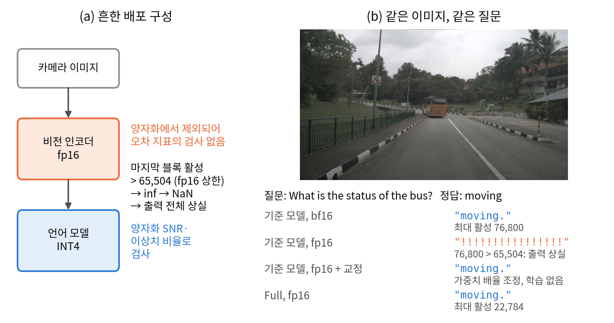

주요 결과 · 07
기존 압축 품질 점수는 오히려 반대로 평가한다

답 96.0%를 상실하는 모델의 압축 품질 점수(SNR)는 32.28 dB, 상실하지 않는 모델은 22.78 dB이다. 점수가 높을수록 좋다고 읽으면 위험한 모델이 더 안전해 보인다.
학위논문 「비전-언어 모델의 저정밀 배포를 위한 표현 범위 기반 오버플로 진단 및 교정」을 전공 밖 청중도 따라올 수 있게 정리하였다.
숫자를 짧게 저장하면 아주 큰 값을 담지 못해, 답 전체가 무효가 된다.
기존 점검 방법은 이 값의 크기를 보지 않는다.
미리 측정하는 방법과, 학습 없이 고치는 방법을 만들었다.
비전 인코더가 사진을 숫자 묶음으로 바꾸고, 언어 모델이 그 숫자를 읽어 답을 쓴다. 자율주행에서는 「앞의 버스는 움직이는가?」 같은 질문에 답한다.
① 지식 증류: 큰 모델(7B)이 작은 모델(3B)을 가르친다.
② 저정밀 연산: 숫자를 32비트 대신 16비트(fp16)로 저장해 빠르고 가볍게 만든다.
fp16이 표현할 수 있는 가장 큰 수. 같은 16비트인 bf16은 약 3.4×10³⁸까지 담는다.
계산 중간값이 이 상한을 넘으면 「무한대」가 되고, 그 뒤 계산은 「숫자가 아님(NaN)」이 된다. 결과는 답이 조금 틀리는 것이 아니라, 그 사진에 대한 답 전체가 무효가 되는 것이다.

상한이 넉넉한 bf16으로 채점한다. 실제 배포 형식(fp16)의 위험이 드러나지 않는다.
값을 비율로 보므로 전체를 10⁶배 키워도 점수가 같다. 절대 크기가 상한을 넘는지는 알 수 없다.
압축 점검은 언어 모델만 한다. 비전 인코더는 압축에서 제외되어 fp16으로 실행되므로 점검 목록에 없다.
여유 = 상한(65,504) ÷ 실제로 나온 가장 큰 값
여유가 2배면 두 배 커져도 괜찮고, 1배보다 작으면 이미 상한을 넘은 것이다. 여유는 모델과 입력 해상도가 정해지면 배포 전에 계산할 수 있으므로, 실제로 실행하기 전에 위험을 판단할 수 있다.
크기는 상한이 넉넉한 bf16에서, 실제로 쓸 해상도에서 측정한다. fp16에서 측정하면 상한을 넘은 사진이 측정에서 제외되어 안전해 보인다.
상한을 넘는 사진의 비율. 이것이 그대로 「답을 상실할 사진의 비율」의 추정치가 된다.
비전 인코더 마지막 부분에서 두 값을 곱하는 지점이다. 곱한 결과가 상한을 넘는다.
곱하기 전에 두 값을 조금씩 줄여 곱이 상한 아래로 오게 한다. 가중치 몇 개만 바꾸면 되고 다시 학습할 필요가 없다.
| 방법 | 답을 상실한 사진 |
|---|---|
| 고치지 않음 | 95.9% |
| 곱한 뒤 결과를 1/3로 줄임 | 96.4% |
| 곱하기 전 두 값을 각각 줄임(곱이 약 1/3) | 0.0% |
같은 큰 모델에게서 배운 작은 모델 다섯을 만들었다. 차이는 학습할 때 쓴 손실(배우는 방식)뿐이다.
| 모델 | 시험 점수(bf16) | 여유 | fp16에서 답을 상실한 사진 |
|---|---|---|---|
| Task only (기본 학습) | 50.30% | 0.88배 | 96.0% |
| Task + out.KD | 46.74% | 1.07배 | 26.8% |
| Full (특징 정렬로 학습) | 51.69% | 2.94배 | 0.0% |
사진 799장, 원본 해상도. 시험 점수는 NuScenes-QA 11,309문항.
답 96.0%를 상실하는 모델의 압축 품질 점수(SNR)는 32.28 dB, 상실하지 않는 모델은 22.78 dB이다. 점수가 높을수록 좋다고 읽으면 위험한 모델이 더 안전해 보인다.

평가에서 쓰는 작은 해상도에서는 기본 학습 모델도 4.8%만 상실하지만, 카메라 원본 해상도에서는 96.0%로 증가한다.
초과 비율로 추정한 상실률은 실제와 평균 1.1%p 차이였다(6개 모델).
fp16 원본 해상도, 고치기 전 정확도
곱하기 전 교정 후 정확도
상한이 넉넉한 bf16의 정확도(교정과 0.29%p 차이)
| 실행 환경 | 고치기 전 | 교정 후 |
|---|---|---|
| 서버용 가속 엔진(TensorRT, A100, 원본 해상도) | 94.9~95.1% | 0% |
| 차량용 소형 보드(Jetson Orin Nano, 802,816 해상도) | 30.7% | 0% |
수치는 답을 상실한 사진의 비율. bf16으로 바꾸어도 상실은 없지만 1.30~1.36배 느렸고, 교정은 fp16 속도를 유지한다.
공개 양자화 모델 저장소 197개 중, 비전 인코더를 압축에서 제외하고 fp16으로 실행하도록 적힌 비율(하한)
본 연구 학생과 같은 구조의 공개 INT4 배포본의 여유. 이미 상한을 넘는다
또한 학습 방식으로 여유를 넓힐 수 있었다. 특징 정렬의 비중을 키우면 여유가 1.79배에서 4.61배로 커졌다.
오픈소스 추론 엔진 vLLM에, Gemma 4를 fp16으로 실행하면 모든 사진에서 의미 없는 출력만 나온다는 보고(이슈 #40290)가 있었다. 같은 방법으로 사진 799장을 측정하였다.
| 지점 | 상한을 넘는 사진 |
|---|---|
| 비전 인코더 블록 내부 | 0% (여유 19배 이상) |
| 블록 뒤 연산(값에 √1152 ≈ 34를 곱하는 곳) | 100% |
값이 흘러가는 경로의 세 곳을 1/4로 줄이고, 마지막 단계에서 원래 크기로 되돌린다. 최종 결과는 그대로이고, 상한을 넘던 중간값만 1/4로 작아진다.
| 항목 | 고치기 전 | 교정 후 |
|---|---|---|
| 상한을 넘는 사진(799장) | 100% | 0% |
| 실제 질의 799문항의 무효 출력(26B-A4B 모델) | 100% | 0% |
| 교정 전후 출력의 일치도(fp32 코사인) | 0.99999996 이상 | |
참조 구현(transformers)은 이 연산을 32비트로 계산해 피해 가지만, 16비트로만 계산하는 경로에서는 모든 사진이 답을 상실한다.
다루는 실패는 16비트 상한 초과 하나이고, 측정한 범위에서 상한 초과는 Qwen2.5-VL 3B·72B와 Gemma 4에서 나타났다.